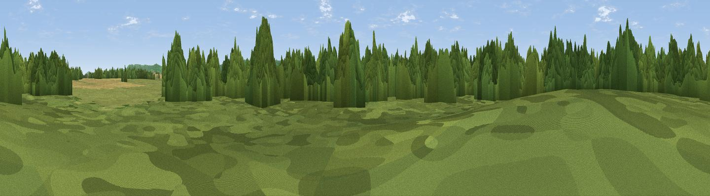

Nebrow Hill
#43938 in England · top 90% of its area beats it · near CambridgeWhere it is
The exact computed spot (SO 74336 05362). Click the marker for map links.
The view, rendered

A 360° render of this exact spot computed from the terrain model, tree cover and land cover — summer colours, afternoon light, calibrated against photographs of famous viewpoints. Real trees, hedges and buildings will differ in detail.
The panorama
Grey silhouette: terrain skyline in each direction (720 bearings, Earth curvature and refraction included). Dashed green: skyline with trees (+15 m) and buildings (+8 m) as obstacles. Blue strip: how far the ground is visible on each bearing.
Where the view opens
Wedge length = distance to the farthest visible ground on that bearing (vegetation-aware). Rings at 10, 25 and 50 km.
What fills the view
52% woodland · 34% grassland · 11% cropland · 1% water · 1% built-up
Angular shares of the visible panorama (visual magnitude), not map area. Landscape diversity 0.46 (0–1 Shannon).
Key numbers
More beautiful places nearby
The staircase of upgrades: each row has a higher view potential than everything closer. Driving times are estimates from straight-line distance, calibrated against real road routing — check an actual route before setting out.
| Place | Direction | Drive | Score |
|---|---|---|---|
| Viewpoint near Slimbridge | W · 2 km | ~6 min | 48.4 |
| Barrow Hill | NNW · 5 km | ~11 min | 65.7 |
| Viewpoint near Stinchcombe | S · 6 km | ~13 min | 77.5 |
| Viewpoint near Stinchcombe | S · 7 km | ~14 min | 79.4 |
| Viewpoint near Stinchcombe | S · 7 km | ~15 min | 80.5 |
| Chase End Hill | N · 30 km | ~47 min | 81.5 |
| Ragged Stone Hill | N · 31 km | ~48 min | 82.5 |
| Midsummer Hill | N · 32 km | ~50 min | 83.0 |
51.74636, -2.37312 · source: osm peak · position refined by local search. Computed location — check access rights before visiting.